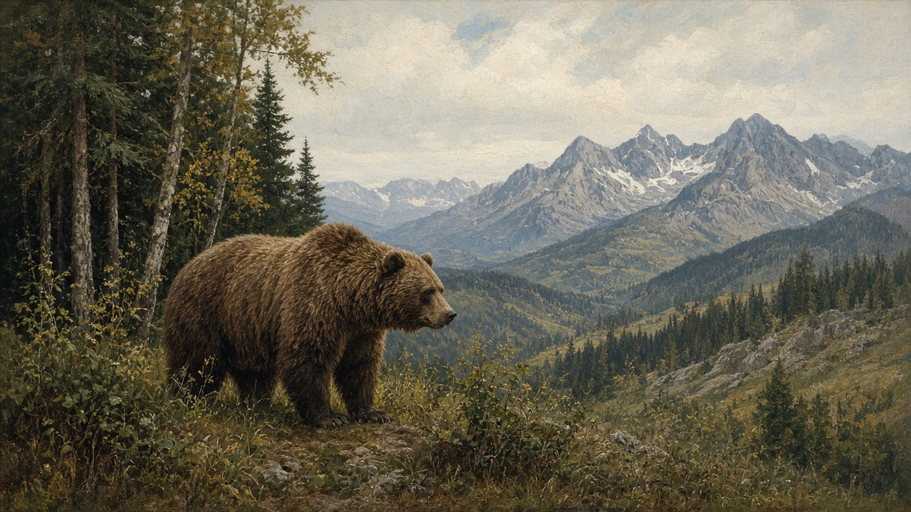

Wildlife
Sălbăticie. Not a species list. The animals people still meet at the orchard fence, in the maize, and where the Danube opens into reeds.

The mountains still talk about them
In the Carpathians the brown bear, the urs, is not a legend. Villages in the mountain curve still lose a night of fruit or a beehive to one. People string electric wire around a stână, a sheepfold, and they keep dogs that mean it — that fold, the dogs, and the men who stay with the flock are on the shepherds page. They do not walk the forest edge at dusk with a bag of scraps. They also do not tell the thriller version. A bear that has learned the bins is a problem for the fence and the mayor, not a reason to empty the woods. The wolf, the lup, is the other name on the same slope. Shepherds still count the flock against it. The dogs work; the men stay with the sheep in the high grass until autumn brings them down — that turn is on the year. The lynx, the râs, is there too, and almost nobody sees it. People mention it the way they mention a ridge in fog: present, not a story you act out.
Forests, fields, and ordinary damage
Lower down the talk changes. The woods people walk for timber and mushrooms — pădurea past the last house — sit on the forest. Red deer, the cerb, and the smaller căprioară cross a road or stand in a clearing. Hunting is a licensed winter business in many communes, discussed like firewood, not like sport television. The wild boar, the mistreț, is the animal that actually argues with the harvest. Maize takes the worst of it, usually after dark. A sow with piglets is what you do not surprise. The fox, the vulpe, still finds the henhouse if the latch is lazy. This is the same yard mapped on villages and the same autumn hurry as harvest: crop loss, a dog that barked, a neighbor who saw tracks in the mud after rain.
Water, birds, and the Delta
Where the Danube slows and splits, the country keeps a different set of animals. The Delta is reeds, channels, and houses that sit with one foot in the water — that place is on the delta page. What people go there to see, or cannot help seeing, are birds: pelicans, pelicani, heavy on the air; herons, stârci, still as stakes; egrets and cormorants that blacken a willow. The chimney nest in a plains village is a different bird — the white stork people mean in the yard — and that story is on storks. Fishermen still work the quieter arms for carp, pike, and the catch that goes to a pot the same day. The coast beyond the mouth is another water — salt, the open mare, the page on the sea — and the birds thin out once the reeds give way.
What you leave, what you watch
Most of this life you leave alone. The lynx, the deer at the tree line, the pelican on a sandbar. What people watch for is closer to the house: a bear that has learned the road to the bins, a boar in the maize, a fox at the coop, a dog that will not settle after dark. In town the same animals become a news item or a zoo trip. In a mountain sat they are a fence, a flashlight, and a sentence over the gate. You do not need a complete list of species. You need the habit of asking which animal the story is standing next to — and whether it was on the ridge, in the field, or in the reeds.